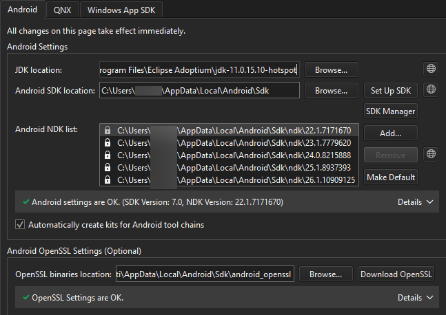

Manage Android NDK packages
To view the Android NDK versions that Qt Creator installed, go to Preferences > SDKs > Android.

SDK Manager installed the locked items. You can modify them only in the Android SDK Manager dialog. For more information, see Manage Android SDK packages.
Download Android NDKs
To manually download NDKs, select  .
.
Set default NDK
To use the selected NDK version for all Qt versions by default, select Make Default.
Add NDK paths
To add custom NDK paths manually to the global list of NDKs, select Add. This creates custom toolchains and debuggers associated to that NDK.
You have to manually create a kit that uses the custom NDK.
See also Add kits, How To: Develop for Android, and Developing for Android.